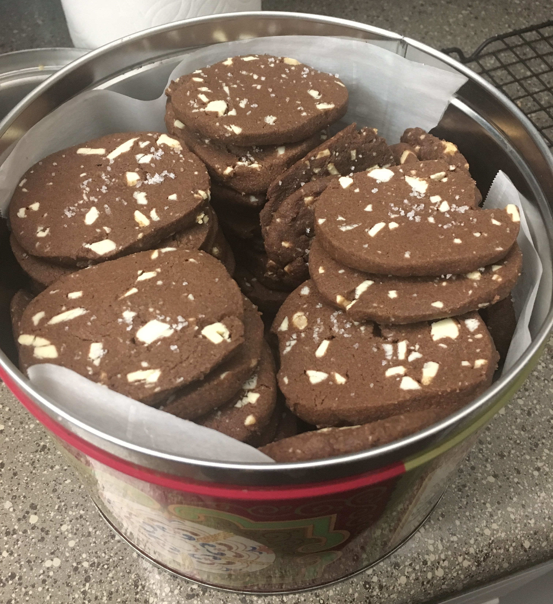

Triple Chocolate Shortbread

Description
These dark chocolate shortbread cookies feature bits of white chocolate
and caramelized white chocolate and are topped with flaky salt to cut
through the sweetness. They are a perfect, chocolately treat!
Ingredients
- 1 1/4 cup All Purpose Flour
- 1/3 cup Dutch Process Cocoa Powder
- 1/2 teaspoon Baking Soda
- 12 tablespoons Butter, softened
- 2/3 cup Brown Sugar, tightly packed
- 1/4 cup White Sugar
- 1/2 teaspoon Kosher Salt
- 1 teaspoon Vanilla Extract
- 4 ounces Good Quality White Chocolate, roughly chopped
-
4 ounces, Caramelized White Chocolate, roughly chopped (see below for
instructions)
- Flaky Sea Salt, for sprinkling
Steps
To Make the Caramelized White Chocolate
- Preheat oven to 250°F.
- Add white chocolate to a rimmed baking sheet.
-
Put chocolate into the oven for 10 minutes. Once the 10 minutes has
passed, remove the chocolate from the oven and mix everything together
and spread it out evenly on the baking sheet.
-
Repeat the process of baking for 10 minutes, mixing, and then spreading
the chocolate into an even layer until the chocolate is silky smooth and
a deep caramel color. At times the chocolate may look grainy, lumpy, or
like it is seizing up. Don't worry, this is normal! Just keep following
the 10 minutes in the oven, stir, even out, and back in the over steps
until caramelizd. This will take approximately 1 hour.
-
Once the chocolate is done caramelizing, line a new baking sheet with
parchment paper. Pour the hot chocolate onto the pan and spread into an
even layer. Let cool completely to room temperature. Once cooled,
transfer to the freezer and freeze for at least 30 minutes. Once frozen,
break or chop the chocolate into chunks. Store in an airtight container
in the refrigerator until ready to use.
To Make the Cookies
-
In a bowl, sift together the flour, cocoa powder and baking soda. Whisk
until fully combined.
-
In the bowl of a stand mixer fitted with a paddle attachment, cream
together the butter, brown sugar and white sugar on medium speed until
light and fluffy, about 3 minutes. Add in the salt and vanilla extract
and mix again until combined. Stop the mixer and scrape down the sides
and bottom of the bowl and mix again for 30 seconds.
-
Stop the mixer and add the dry ingredients. Turn the mixer on low and
mix until the dough just comes together and starts to hold its shape.
Add in the white chocolate and caramelized white chocolate chunks and
mix on low until just combined.
-
Turn the dough onto a clean work surface and gather the dough into a
ball, kneading lightly if necessary. Divide the dough in half and shape
into two long logs that are 1 1/2 inches in diameter. Wrap each log
tightly in plastic wrap and refrigerate overnight.
-
Once dough is thoroughly chilled, preheat the oven to 325°F. Line two
baking sheets with parchment paper.
-
Take the dough out of the refrigerator and remove it from the plastic
wrap. Cut 1/2 inch rounds from the logs and place them on the baking
sheets 1 inch apart. Sprinkle the tops of each cookie with a tiny amount
of flaky sea salt.
-
Bake the cookies for 12 minutes. Once baked, transfer the cookies to
cooling racks.
- Enjoy the cookies slightly warm or room temperature.
HOME